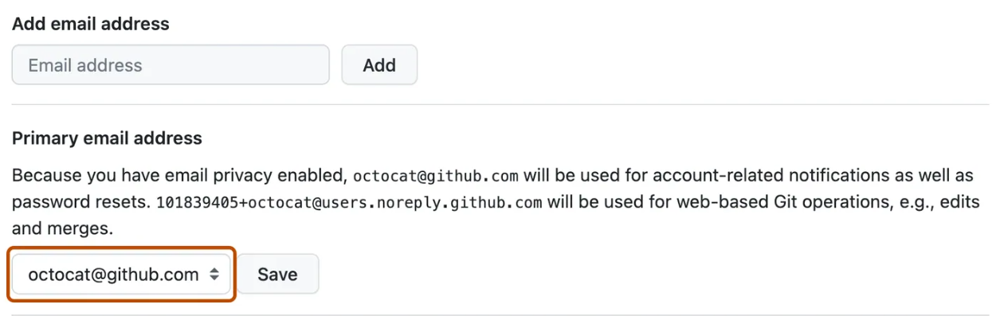

Despre GitHub
GitHub este o platformă bazată pe cloud unde puteți stoca, partaja și lucra împreună cu alții pentru a scrie cod. Stocarea codului într-un „depozitar” pe GitHub vă permite să:
- Prezentați sau distribuiți munca dvs.
- Urmăriți și gestionați modificările aduse codului dvs. de-a lungul timpului.
- Permiteți altora să vă revizuiască codul și să facă sugestii pentru a-l îmbunătăți.
- Colaborați la un proiect comun, fără să vă faceți griji că modificările dvs. vor afecta munca colaboratorilor dvs. înainte de a fi gata să-i integrați.
Lucrarea în colaborare, una dintre caracteristicile fundamentale ale GitHub, este posibilă de software-ul open-source, Git, pe care este construit GitHub.
Cum funcționează Git și GitHub împreună?
Când încărcați fișiere în GitHub, le veți stoca într-un „depozitar Git”. Aceasta înseamnă că atunci când faceți modificări (sau „commit”) fișierelor dvs. din GitHub, Git va începe automat să urmărească și să gestioneze modificările.
Există o mulțime de acțiuni legate de Git pe care le puteți finaliza pe GitHub direct în browser, cum ar fi crearea unui depozit Git, crearea de ramuri și încărcarea și editarea fișierelor.
Cu toate acestea, majoritatea oamenilor lucrează la fișierele lor local (pe propriul computer), apoi sincronizează continuu aceste modificări locale - și toate datele Git aferente - cu depozitul central „la distanță” de pe GitHub. Există o mulțime de instrumente pe care le puteți folosi pentru a face acest lucru, cum ar fi GitHub Desktop.
Odată ce începeți să colaborați cu alții și toți trebuie să lucreze la același depozit în același timp, veți continua:
- Extrageți toate cele mai recente modificări făcute de colaboratorii dvs. din depozitul de la distanță de pe GitHub.
- Împingeți propriile modificări în același depozit de la distanță de pe GitHub.
Git își dă seama cum să îmbine în mod inteligent acest flux de modificări, iar GitHub vă ajută să gestionați fluxul prin funcții precum „cereri de tragere”.
Crearea unui cont pe GitHub
Despre contul dvs. personal pe GitHub.com
Pentru a începe să utilizați GitHub, va trebui să vă creați un cont personal gratuit pe GitHub.com și să vă verificați adresa de e-mail.
Fiecare persoană care utilizează GitHub.com se conectează la un cont personal. Contul dvs. personal este identitatea dvs. pe GitHub.com și are un nume de utilizator și un profil. De exemplu, vezi profilul lui octocat .
Mai târziu, puteți explora diferitele tipuri de conturi pe care le oferă GitHub și puteți decide dacă aveți nevoie de un plan de facturare. Pentru mai multe informații, consultați „ Tipuri de conturi GitHub ” și „ Planurile GitHub ”.
Înregistrarea pentru un nou cont personal
- Navigați la https://github.com/ .
- Faceți clic pe Înregistrare .
- Urmați instrucțiunile pentru a vă crea contul personal.
În timpul înscrierii, vi se va cere să vă verificați adresa de e-mail. Fără o adresă de e-mail verificată, nu veți putea finaliza unele sarcini de bază GitHub, cum ar fi crearea unui depozit.
Dacă întâmpinați probleme la verificarea adresei de e-mail, există câțiva pași de depanare pe care îi puteți lua. Pentru mai multe informații, consultați „ Verificarea adresei de e-mail ”.
Setarea adresei de e-mail de commit pe GitHub
Dacă nu ați activat confidențialitatea adresei de e-mail, puteți alege cu ce adresă de e-mail verificată să creați modificări atunci când editați, ștergeți sau creați fișiere sau îmbinați o solicitare de extragere pe GitHub. Dacă ați activat confidențialitatea adresei de e-mail, atunci adresa de e-mail a autorului de comitere nu poate fi schimbată și va fi implicit fără răspuns. Pentru mai multe informații despre forma exactă pe care o poate lua adresa de e-mail fără răspuns, consultați „ Setarea adresei de e-mail de confirmare ”.
- În colțul din dreapta sus al oricărei pagini din GitHub, dați clic pe fotografia de profil, apoi faceți clic pe Setări .
- În secțiunea „Acces” a barei laterale, dați clic pe E-mailuri .
- În „Adăugați adresa de e-mail”, introduceți adresa dvs. de e-mail și faceți clic pe Adăugați .
- Verifică-ți adresa de email .
-
În meniul drop-down „Adresă de e-mail principală”, selectați
adresa de e-mail pe care doriți să o asociați cu operațiunile
dvs. Git bazate pe web.
 - Pentru a vă păstra adresa de e-mail privată atunci când efectuați operațiuni Git pe web, selectați Păstrați adresele mele de e-mail private .
Setarea adresei de e-mail de comitere în Git
Puteți folosi git config comanda pentru a schimba adresa de e-mail pe care o asociați cu comiterile Git. Noua adresă de e-mail pe care o setați va fi vizibilă în orice comitere viitoare pe care le trimiteți către GitHub.com din linia de comandă. Orice comitere pe care le-ați făcut înainte de a vă schimba adresa de e-mail de comit sunt în continuare asociate cu adresa dvs. de e-mail anterioară.
Setarea adresei de e-mail pentru fiecare depozit de pe computer
- Deschideți Git Bash .
-
Setați o adresă de e-mail în Git. Puteți utiliza adresa de
e-mail furnizată de GitHubnoreply sau orice adresă de e-mail.
git config --global user.email "YOUR_EMAIL"
-
Confirmați că ați setat corect adresa de e-mail în Git:
$ git config --global user.email
email@example.com
-
Adăugați adresa de e-mail în contul dvs. de pe GitHub, astfel
încât angajamentele dvs. să vă fie atribuite și să apară în
graficul contribuțiilor dvs. Pentru mai multe informații,
consultați „
Adăugarea unei adrese de e-mail la contul dumneavoastră GitHub ”.
Încărcarea unui proiect în GitHub
Încărcarea fișierelor într-un depozit GitHub vă permite:
- Aplicați controlul versiunilor atunci când modificați fișierele, astfel încât istoricul proiectului să fie protejat și gestionabil.
- Faceți backup pentru munca dvs., deoarece fișierele dvs. sunt acum stocate în cloud.
- Fixați depozitul la profilul dvs. personal, astfel încât ceilalți să vă poată vedea munca.
- Distribuiți și discutați despre munca dvs. cu alții, public sau privat.
Pasul 1: Creați un nou depozit pentru proiectul dvs
Este o idee bună să creați un nou depozit pentru fiecare proiect individual la care lucrați. Dacă scrieți un proiect software, gruparea tuturor fișierelor asociate într-un nou depozit facilitează întreținerea și gestionarea bazei de cod în timp.
- În colțul din dreapta sus al oricărei pagini, selectați +, apoi faceți clic pe Arhivă nou .
- În caseta „Nume depozit”, tastați un nume pentru proiectul dvs. De exemplu, tastați „primul meu-proiect”.
- În caseta „Descriere”, introduceți o scurtă descriere. De exemplu, tastați „Acesta este primul meu proiect pe GitHub”.
- Selectați dacă depozitul dvs. va fi Public sau Privat . Selectați „Public” dacă doriți ca alții să vă poată vedea proiectul.
- Selectați Adăugați un fișier README . Veți edita acest fișier într-un pas ulterior.
- Faceți clic pe Creare depozit .
Pasul 2: Încărcați fișiere în depozitul proiectului dvs
Până acum, ar trebui să vedeți doar un fișier listat în depozit, fișierul pe care README.md l-ați creat când ați inițializat depozitul. Acum, vom încărca câteva dintre propriile fișiere.
- În partea dreaptă a paginii, selectați meniul drop-down Adăugați fișier .
- Din meniul drop-down, faceți clic pe Încărcați fișiere .
- Pe computer, deschideți folderul care conține lucrarea dvs., apoi trageți și plasați toate fișierele și folderele în browser.
- În partea de jos a paginii, sub „Angajați modificări”, selectați „Angajați direct în main ramură, apoi faceți clic pe Commiteți modificări .
Concluzie
Acum ați creat un nou depozit, ați încărcat câteva fișiere în el și ați adăugat un proiect README.
Dacă setați vizibilitatea depozitului dvs. la „Public”, depozitul va fi afișat în profilul dvs. personal și puteți partaja adresa URL a depozitului dvs. altor persoane.
Pe măsură ce adăugați, editați sau ștergeți fișiere direct în browser de pe GitHub, GitHub va urmări aceste modificări ("commit-uri"), astfel încât să puteți începe să gestionați istoricul și evoluția proiectului.
Când faceți modificări, rețineți că puteți crea o ramură nouă din main ramura depozitului dvs., astfel încât să puteți experimenta fără a afecta copia principală a fișierelor. Apoi, când sunteți mulțumit de un set de modificări, deschideți o cerere de extragere pentru a îmbina modificările în main ramura dvs.
Pasii urmatori
Majoritatea oamenilor doresc să continue să lucreze la fișierele lor local (adică pe propriul computer) și apoi să sincronizeze continuu aceste modificări făcute local cu acest depozit „la distanță” (în cloud) de pe GitHub. Există o mulțime de instrumente care vă permit să faceți acest lucru, cum ar fi GitHub Desktop. Pentru a începe, ar trebui să:
- Instalați GitHub Desktop. Pentru mai multe informații, consultați „ Noțiuni introductive despre GitHub Desktop ”.
- Clonați depozitul de la distanță, astfel încât să aveți o copie a acestuia pe propriul computer. Pentru mai multe informații, consultați „ Clonarea și bifurcarea depozitelor din GitHub Desktop ”.
- Sincronizați continuu modificările locale cu acest depozit de la distanță. Pentru mai multe informații, consultați „ Sincronizarea sucursalei dvs. în GitHub Desktop ”.